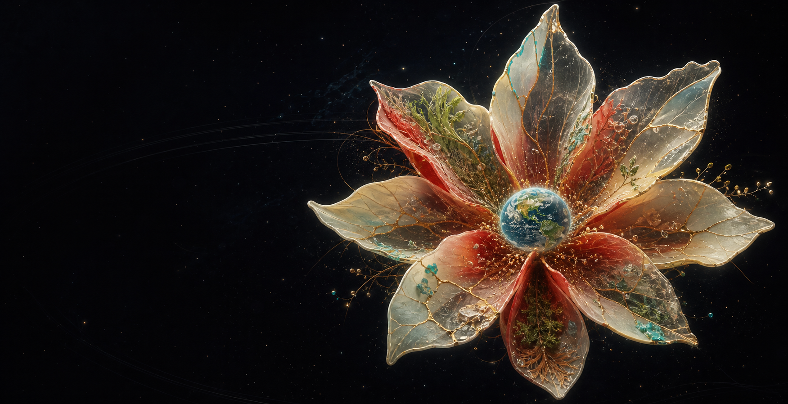

A labelled orbital diagram shows our Sol system with Mercury, Venus, Earth, Mars, Jupiter, Saturn, Uranus and Neptune. The diagram is not to scale.
The choice
I see infinity.
I choose infinity.
GAJRA Earth exists to convene a meeting of minds about self-alignment and AI alignment within the trinity of Joyful Responsible Abundance.
The orbital model shows Sol and the eight named planets. Earth is drawn from the 2012 Suomi NPP Blue Marble raster. The diagram is not to scale.
Source and full credits · NASA SVS 30002International Space Station photographs begin above the Southern Ocean between Africa and Antarctica. Green and red Aurora Australis remain visible as Australia and the lights of Perth come into view.
Source and full credits · NASA SVS 31281What is the point of longer, healthier lives if not to enjoy the extra time?
Plainly, this is the point.
GAJRA Earth is a meeting space for people asking how humans and artificial intelligence can align towards lives with more joy, stronger responsibility and shareable abundance.
Self-alignment asks: what am I actually steering towards, and what does that do to other people, places and futures?
AI alignment asks: what are our tools, models, agents and institutions being steered towards, and who gets to notice when the steering is wrong?
GAJRA holds those questions together. The point is not only avoiding disaster. The point is choosing better destinations, better journeys and better returns home.
What might make a life worth aligning towards?
Safety research maps ways powerful systems could avoid catastrophe. GAJRA opens another line of exploration: which forms of capability, care, culture and flourishing might be worth steering towards?
Name what matters here
Describe joy, responsibility, abundance and balance in your own place, culture and circumstances.
MeetHost a small circle
Turn the core question into an invitation, a time, a place and a return path.
GatherPrepare a field kit
Shape one practical field kit for a listening station, tech-help table or public question circle.
Why this matters now.
AI is moving through money, institutions, culture and daily life faster than most people can metabolise. A public meeting room helps the conversation move beyond fear headlines and product demos.
The build race is already huge
Stanford HAI reports that U.S. private AI investment reached 285.9 billion US dollars in 2025, while private investment grew fastest globally.
State of playGovernments are building safety rooms
The Bletchley and Seoul processes, national AI Safety Institutes and international safety reports are mapping risks, testing and governance.
IndustryFrontier labs are coordinating too
The Frontier Model Forum brings major AI companies around public safety, national security, evaluations and shared research.
GoodAI-for-good spaces already exist
AI for Good convenes UN agencies, governments, industry and civil society around practical AI uses for global challenges.
The missing middle.
Technical safety asks whether powerful systems can be tested, contained and governed. Public AI-for-good spaces ask where AI can help. GAJRA Earth adds a human question beside both: what kind of selves, communities and futures are worth aligning towards?
That question belongs with builders, artists, scientists, families, founders, elders, organisers, sceptics, teachers, musicians, policy people and anyone whose life is already being shaped by automated decisions.
The stakes are practical and intimate: money, work, education, health, media, culture, public trust, ecological pressure, cyber security, biosecurity, human agency and the texture of ordinary days.
What can a flower reveal about forces?
A petal grows through pressure, limits, repair and exchange. The flower offers one possible map of flourishing: softness with structure, held open to interpretation.

Created for this site as a symbolic study of care, limits and abundance. It is imaginative artwork, not scientific evidence or a claim of planetary protection.
Read the artwork and media provenance